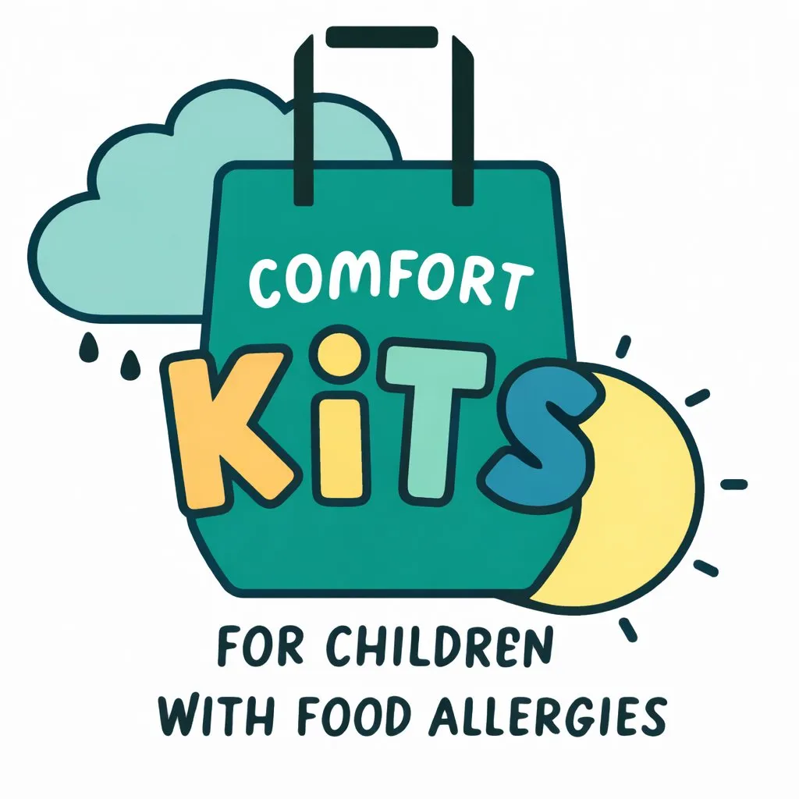

Evidence-based mind-body tools to help children manage the anxiety, stress, and emotional burden of living with a food allergy.
Food allergies are a chronic health condition that often stays out of sight — until a reaction occurs. Yet day-to-day food allergy management places a continuous emotional and practical burden on children, teens, and their families.
The emotional impact can take many forms: worry and anxiety, fear, hypervigilance that alters routines, and sadness or frustration that can diminish overall well-being. Sometimes these reactions are temporary and manageable. But they can also become persistent, interfere with daily functioning, and impact healthy development.
Children's thoughts, emotions, and physical responses are closely linked. Anxiety can heighten physical sensations, and physical symptoms can, in turn, amplify worry. Helping children understand and work with this connection allows them to feel more in control of their bodies and their experiences.
Families managing food allergies must navigate cultural and social experiences, particularly around food-centered gatherings and traditions. My approach helps families strengthen stress management skills, build cognitive flexibility, and foster a sense of connection and belonging — so that children don't just get through, but truly thrive.
The six core mind-body practices in every kit are the same evidence-informed techniques used in clinical work with children and families managing food allergies. When children practice these tools regularly, they build resilience and a greater sense of control over their own bodies — which matters enormously for a child who may feel powerless in the face of an allergic reaction.
Belly breathing with a finger puppet teaches children to notice the mind-body connection — reducing anxiety before high-stress situations like a new restaurant or birthday party.
"Catch the Relaxation Wave" helps children release physical tension that builds with food-related anxiety, calming the body's fight-or-flight response.
Gives children a safe outlet to process feelings of being "different" or isolated because of their dietary restrictions.
A powerful tool for shifting attention away from discomfort or worry — especially useful during medical appointments or after a reaction.
Calming phrases that address distorted or "sticky" thoughts, building cognitive flexibility and confidence in real-world situations.
Energy resets that help children discharge stress in the body, making it easier to return to calm after anxious moments.
What makes this kit unique: in addition to six proven mind-body practices, Dr. Lombard has designed three activities specifically for children managing food allergies and their big feelings.
Every kit includes carefully selected physical items that support the 9 Mind-Body Comfort Activities, plus a QR code linking to audio guidance for caregivers and children.
These activities are designed for use at the specific moments when food allergy anxiety typically peaks.
Food allergy anxiety is valid, common, and very treatable. Here's how caregivers can get the most from the kit.
Children living with food allergies face real and ongoing psychological stress — fear of exposure, social isolation, and anticipatory anxiety around every meal. Comfort Kits equip them with 9 evidence-based mind-body activities they can use independently, at any age, in any setting. By involving the caregiver, confidence and emotional co-regulation is encouraged.
Recommend to patients managing pre/post-reaction anxiety, fear of accidental exposure, high anxiety at mealtimes, coping during OIT dosing and oral food challenges, sleep difficulties, and social isolation.
Comfort Kits for Children is a 501(c)(3) nonprofit. Your donation helps provide these evidence-based kits to children who need them most.